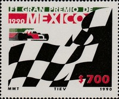
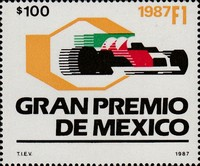
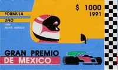
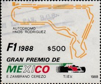
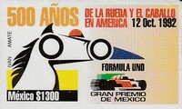
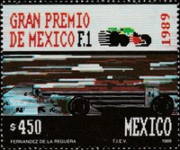

Depicted on Postage Stamps
|
 Issue date: 1990 A single stamp issued to commemorate the 1990 Mexican Grand Prix. The Mexican Grand Prix was a F1 race held at the Autodromo Hermanos Rodriguez in Mexico City. It first appeared as a non-championship event in 1962 before being held as a championship event from 1963-1970 and 1986-1992. In the 1990 race, the real battle ended up being for second place between Mansell and Berger. It culminated in Mansell's legendary pass around the outside of Berger going into the ultra-fast Peraltada corner. Some called it brave, some called it suicidal, either way Mansell finished second. The race was won by Alain Prost (Ferrari), Nigel Mansell (Ferrari) was second and Gerhard Berger (McLaren-Honda) was third.  Issue date: 1987 A single stamp issued to commemorate the 1987 Mexican Grand Prix. The race was stopped after 30 laps when Derek Warwick (Arrows) crashed out. It was restarted over a further 33 laps, with the times of two races being aggregated. Nelson Piquet (Williams) took the chequered flag first but Nigel Mansell (Williams) was declared the winner on aggregate, as he had had a huge lead before the red flag.  Issue date: 1991 A single stamp issued to commemorate the 1991 Mexican Grand Prix. The 1991 Mexican Grand Prix was held at the Autodromo Hermanos Rodriguez near Mexico City. The race was dominated by the Williams-Renaults of Ricardo Patrese (who won the race) and Nigel Mansell (2nd place). Ayrton Senna was third in the McLaren-Honda, nearly a minute behind the winner. Andrea De Cesaris scored more points for the impressive Jordan 191 with a fourth placed finish, the Italian having to push his car over the line - De Cesaris was initially disqualified for pushing his car over the line, but was then reinstated.  Issue date: 1988 A single stamp issued to commemorate the 1988 Mexican Grand Prix. The race was held at the Autodromo Hermanos Rodriguez, Mexico City. It was the fourth race of the 1988 F1 season; the race was won by Ayrton Senna in a McLaren-Honda, with Alain Prost in the second McLaren-Honda and Gerhard Berger was third in a Ferrari.  Issue date: 1992 A single stamp issued to commemorate the 1992 Mexican Grand Prix - held at the Autodromo Hermanos Rodriguez, Mexico City on 22nd March. This was the last F1 race to be held in Mexico. It was the first podium for Michael Schumacher (Benetton), as he came in 3rd place, behind the two Williams cars of Nigel Mansell and Ricardo Patrese.  Issue date: 1989 A single stamp commemorating the 1989 Mexican Grand Prix. The race was won by Ayrton Senna (McLaren Honda), Riccardo Patrese (Williams Renault) was second and Michele Alborete (Tyrrell-Ford) was third. |